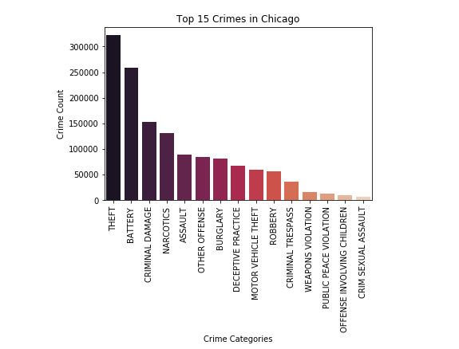
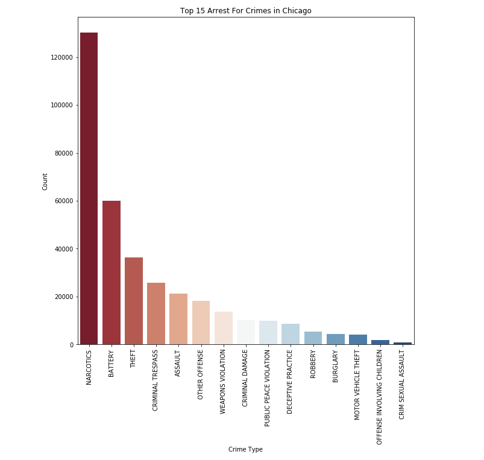
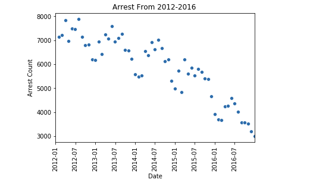
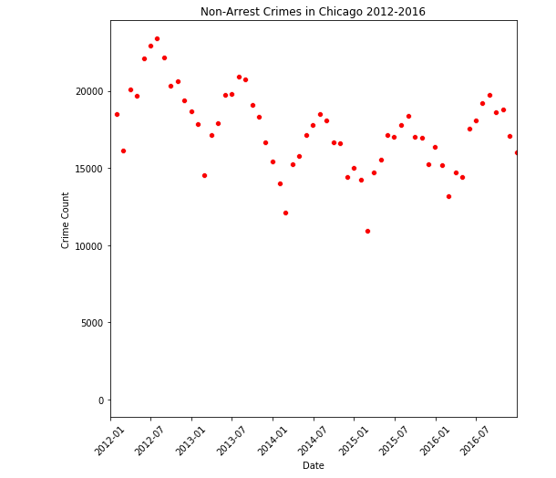

Project information
- Category: Chicago Crime Analysis
- Project date: February, 2020
- GitHub URL: Chicago Crime Analysis
Chicago Crime Analysis
I came across a really interesting dataset on the Chicago Data Portal. It a dataset of the crimes reported from 2012-2016 in Chicago IL. There are over 2 million reported crimes in this dataset. I wanted to do an Exploratory Data Analysis and see if I can find something interesting.
My first step was data cleaning. I used pandas to clean the data by removing nulls, duplicates, and outliers. I used matplotlib and seaborn to make visual representations of the data. One interesting thing about the data set was it gave the exact longitude and latitude of where the crime was committed. I used this to map out the crimes and see which areas in Chicago are suffering from the most crime.
Below is a bar chart of the 15 most occurring crimes in Chicago.

There are 33 different categories of crime, but this chart shows the top 15. I was very surprised to see Battery and Assualt in the top 15. I am aware it is common, but now I am aware that it is way more rampant than I perceived.
I decided to break the dataset down by categorized the crimes where an arrest was made and where an arrest was not made. There is a very heavy imbalance in the number of arrests and the number of not arrest. Over 75% of crimes did not result in an arrest which can be alarming. What are the next steps cops can do to arrest people for convicted crimes?

The bar chart above shows the Top 15 Arrest Crime Categories. We see that narcotics is the leading crime category for arrest, but it ranked 3rd in most occurring. There is a significant drop in the number of arrests of every crime that is not narcotics. There were over 300k reported thefts, but only 40k arrest were made. The reason why not every crime will end in an arrest is that we have lawyers and trail etc. Getting arrested can be completely circumstantial, so that's why it may be a little harder to say whether an arrest occurred or not.
We can see that arrests are highly seasonal and they are on a downwards trend. We can see the peaks of the arrests are made in summer months, and the troughs are in the winter months. This leads me to assume people commit more crimes in warm weather.


To view this EDA in its entirety the GitHub link can be found in the project information box.
I also wrote a blog post about this topic. Here is the link.
Blog Website